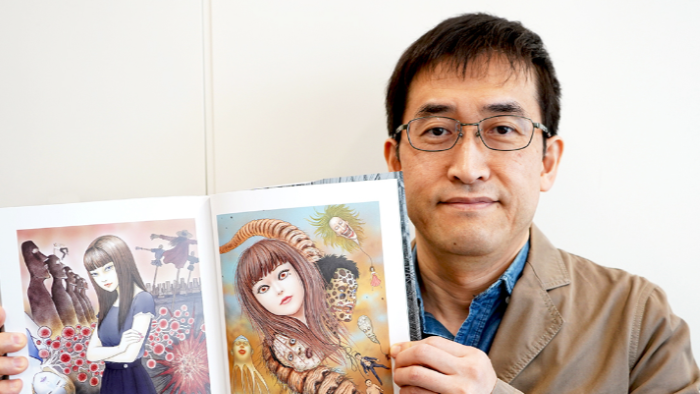
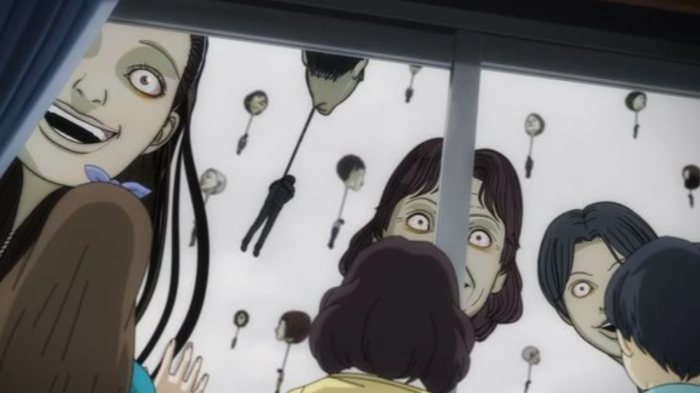
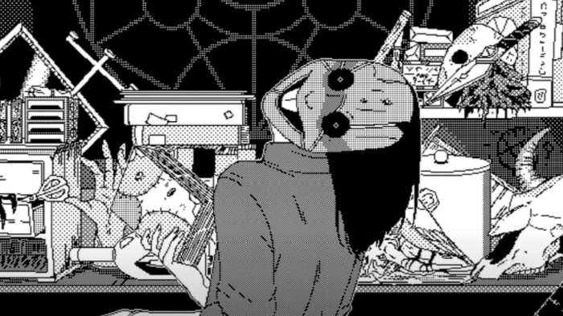

Welcome to the informational website on Junji Ito, his stories, his life, his inspirations and similar media inspired by him. Here you can find information on Junji Ito himself, articles exploring his themes and his rise in fame and detailed information on all of his work.
Here you can read Junji Ito's biography, his inspirations, how he started making manga, and some interesting not well-known facts about his life.
There are many movies, TV shows and even video games adapting Junji Ito's work. Here you can find them all and explore some film or interactive Junji Ito content.
Whether you want more information or are jumping into Junji Ito for the first time, here you can find interesting articles, his cameos, and work inspired by Junji Ito's stories.
